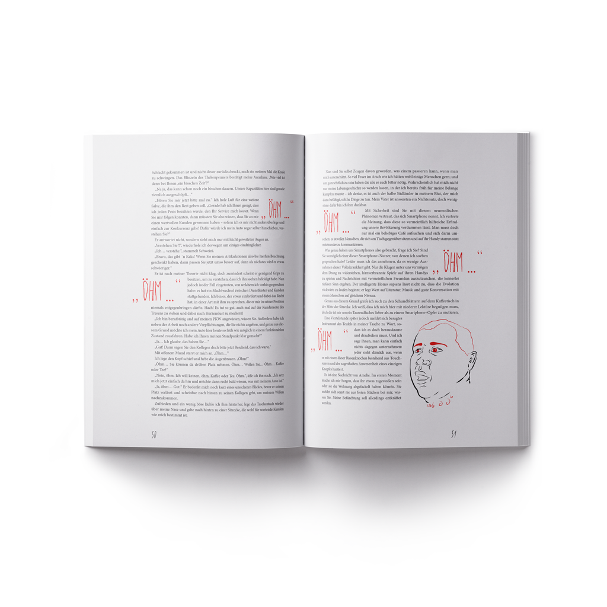

Das Buch mit dem Titel „The Unlucky Librarian“ ist eine Kooperation zwischen einer befreundeten Autorin und mir. Ich gestaltete und Layoutete die Geschichte zu einem Illustrativen und Interaktiven Buch mit Augmanted Reality.
Bei dem Manuskript handelt es sich um unterhaltende Belletristik aus dem Genre der Satire. Folglich nach dem Inhalt, ist mein Grundkonzept für die Gestaltung „Tradition und ein Hauch von Anarchie“. Mein Gestalterisches Projekt wurde zum „Lette Design Award 2015“ Nominiert.

